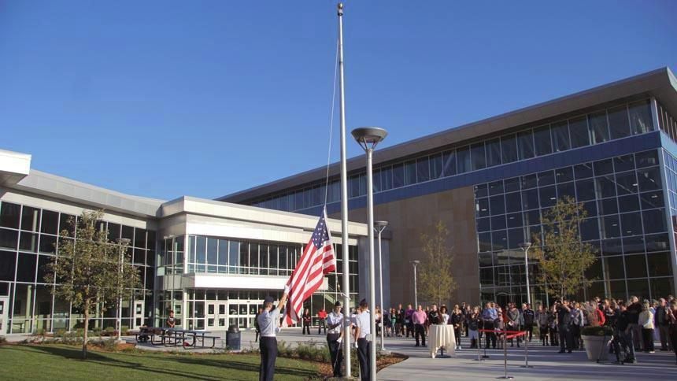

News
Sports
Life
Obituaries
Opinion
Council approves HealthEast naming deal for Woodbury sports center
The Bielenberg Sports Center will operate under a new name following the Woodbury City Council’s approval of a sponsorship agreement with HealthEast on Wednesday. The $1.8 million naming rights deal will see the sports center become the HealthEast Sports Center and will net the city $126,000 annually for 14 years. As Woodbury’s largest private employer, HealthEast will also have the option to sign a $1.5 million extension for five years when the current contract expires. City leaders have expressed general support leading up to the Wednesday's decision, saying the added revenue could be used to support programs inside the sports center, as well as bolster the city’s focus on health and wellbeing. “(The sports center) is the east metro's premier showcase for healthy and active living,” said Woodbury Senior Planner
Eric Searles during the meeting. “Staff feel the partnership with HealthEast is a natural fit.” HealthEast will not hold a space in the building, but the health care chain said it plans to offer pop-up clinics and other educational events focused on topics such as concussion testing and other health screenings. HealthEast reached a private agreement to take over naming rights from Minnesota United FC, who signed a marketing and sponsorship agreement with the city in 2013, according to a city memo. The state’s professional soccer club intended to use part of the center as it's main training facility but double backed in 2015. Despite the fallout, the team still maintained its sponsorship agreement with the city
and continues to rent the 90,000-square-foot indoor field house for training and practices. The agreement would also have little impact on Summit Orthopedics, who last summer opened its sports-focused clinic at the facility. The naming deal, however, didn’t sit well with Woodbury resident Mary Jensen, who asked for council members to further discuss the proposal and hold an open discussion. She expressed concerns that re-naming the center runs counter to what residents chose when the $22 million sports complex was being planned. Pointing out the facility continues to make money, Jensen also questioned whether the deal could lead to future naming rights of public places named after Woodbury's history and culture. "If you agree to this deal, what's next? The John Doe Chiropractic Golf
Course, the Bachman's Central Park or the OfficeMax Government Building?" she asked. "You're opening a can of worms." Searles said Wednesday that the city contacted the Bielenberg family, who expressed support for the agreement. He also pointed to Bielenberg Gardens -- a development site located across the street from the sports center -- as one of the several places the family’s legacy is honored in the city. The city also plans to honor the family’s name in future areas within the sports center. The City Council plans to discuss where they will allocate the new funds at a later date.
The Bielenberg Sports Center will become the HealthEast Sports Center, following Woodbury city council's approval of a naming rights deal with the health care system. Youssef Rddad / RiverTown Multimedia file photo
Raising the American flag at the opening of the new Bielenberg Sports Center. File photo


© Woodbury Bulletin and Forum Communications Company
8420 City Centre Drive Woodbury, Minnesota 55125 Call us at 651-319-4270